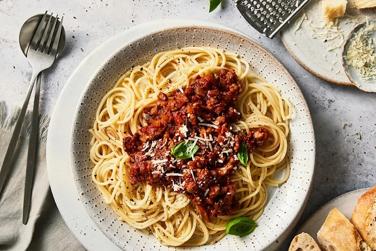

Spaghetti Bolognese

Another Italian Classic. If you can't tell by now, I love this type of food.
Everyone needs a great everyday Spaghetti Bolognese recipe, and this is mine!
The Bolognese Sauce is rich, thick and has beautiful depth of flavour. It’s
perfect for a quick midweek meal but even better if you can simmer it for a
couple of hours!
The Recipe:
- Rao's Dried Spaghetti Noodles
- Rao's Tomato Sauce
- Grass-Fed Ground Beef
- Diced Garlic Cloves
- Diced White Onions
- Butter
- Olive Oil
- Parmesan Cheese
How To Cook:
- Boil Water in a large pot
- Sautee Garlic and Onions
- Put Spaghetti in Pot once water is boiling
- Place Beef in Pan and cook until light pink
- After 10 minutes, drain water and remove spaghetti
- Pour Bolognese Sauce over Spaghetti Pot and Mix
- It's That Easy!
HOME PAGE